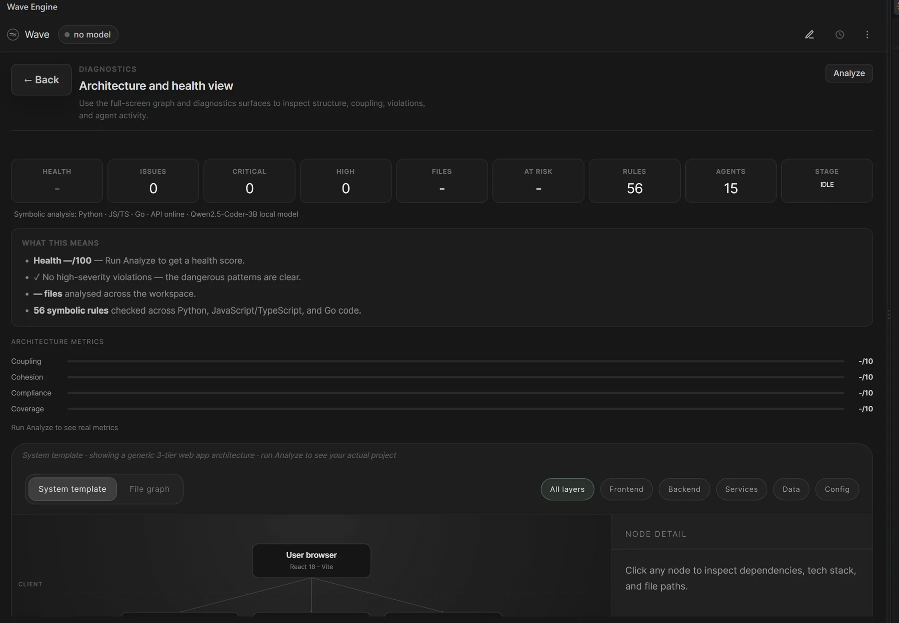
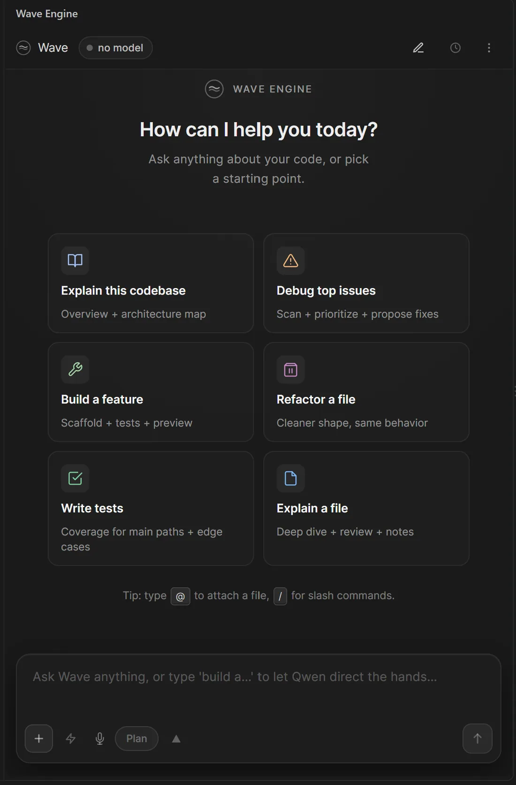
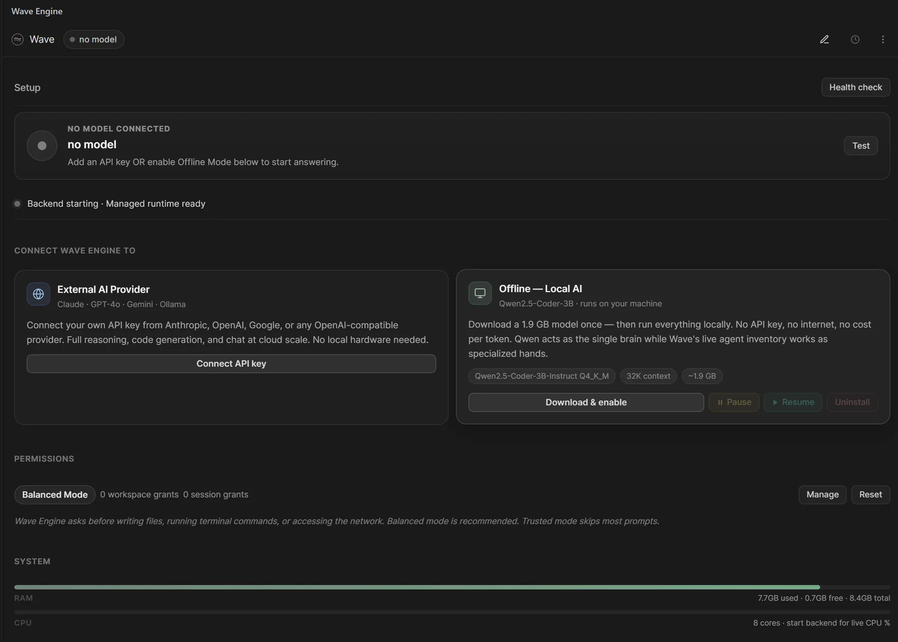

Screenshots




The problem
AI coding assistants usually send your code to a large cloud model and hope it guesses correctly. When the model cannot see how a project fits together, it invents file paths and APIs, and the developer gets a confident answer with no evidence behind it.
- Context. Generic assistants miss project structure, entry points, dependencies and prior decisions.
- Trust. Answers rarely point to real files and line numbers, and nothing checks them before they are shown.
- Privacy and cost. The code leaves the machine, and every token is billed.
Constraints I set myselfIt had to run on an ordinary 8 GB laptop, work offline, and cost nothing to use.
What I built
The idea is to let deterministic agents gather the evidence and let a small local model only explain what they found. Every answer is critiqued and scored before it is shown.
The answer path (centre) and build path (right) share one 4-bit model. Dashed teal lines are model calls; the orange loop is self-correction.
How an answer is produced
- Route. An intent router decides whether the request is a question, a change or a command. Anything that writes to disk waits for approval.
- Gather evidence. The orchestrator posts the task to a shared blackboard. Agents bid for sub-tasks based on capability, load and track record, then map the repository, read files, trace the architecture and run tests.
- Critique first. Before any text is generated, a critic agent lists what a correct answer must include.
- Reason in parallel. Two or three reasoning chains run with different evidence strategies, and a confidence scorer picks the best.
- Check, then retry. The winner is re-scored on relevance, completeness and specificity. Below 0.55 it is regenerated with the critic's feedback.
- Remember. The answer is cached and useful fix patterns are stored, so the next similar question is faster.
Engineering decisions
- Speed through caching, not hardware. An answer cache keyed by prompt and repository state (with fuzzy matching), a byte-identical system prefix so parallel calls reuse the model's KV cache, and speculative decoding. Most prompts went from about 40 seconds to about 5.
- Fits the machine it runs on. Context length and parallel slots adapt to free RAM at launch (32K by 3 down to 8K by 1), with an 8-bit KV cache.
- Safe tool use. Tool calls are forced through a grammar so a small model cannot emit broken JSON, and the loop stops if the same error repeats or after 15 iterations.
- Code is tested before it is shown. A five-agent council (Architect, CodeGen, Tester, Reviewer, Optimizer) must reach a consensus score of 0.7, then a generate, run, fix loop feeds real errors back to the model.
- Useful with no model at all. 56 symbolic rules across Python, JS/TS and Go, dependency graphs for six or more languages, and pattern-based security checks.
- Extensible agents. 17 core agents and 5 council agents in Python, plus 85 specialists defined in Markdown and YAML, so new agents need no engine changes.
Tech stack
| VS Code extension | TypeScript, VS Code API, webviews, SecretStorage; 48 commands |
|---|---|
| Backend | Python 3.12, FastAPI (157 local endpoints), Pydantic v2, SQLite, structlog |
| Model | Qwen2.5-Coder-3B, 4-bit Q4_K_M (1.9 GB), served locally by llama.cpp |
| Optional cloud models | Claude, GPT, Gemini, OpenRouter, DeepSeek |
| Quality | 864 automated tests; about 108,000 lines of Python |
Impact
- Live on the VS Code Marketplace since March 2026: 767 downloads, 30+ active users and 106 releases.
- Typical response time cut from about 40 seconds to about 5 seconds on CPU.
- Works fully offline. Code never leaves the machine unless the user chooses a cloud model.
- Grew beyond coding into a local assistant: morning briefings across calendar, e-mail and GitHub, cross-repository search, a DevOps dashboard and a secret scanner.
What I learned
- A small model is reliable when it only has to explain evidence it was given and is graded before it speaks. The intelligence lives in the system, not the weights.
- Latency is mostly a caching problem: avoid generating what has already been generated.
- Next: publish benchmark results for the self-correction loop, and make the newer planner the default once it beats the current path.